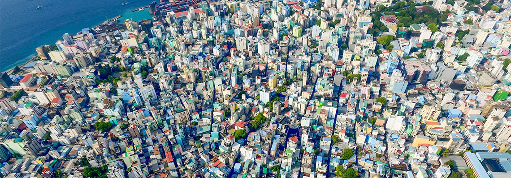
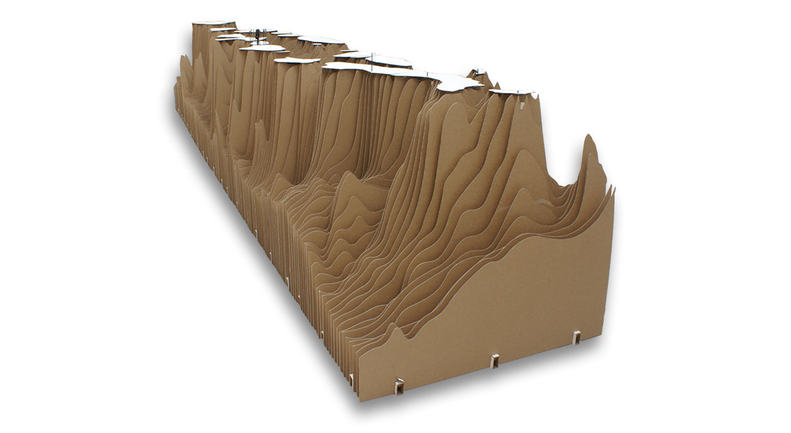

At 4D Island we aim to use data to improve urban and architectural design in the face of the uncertain future of climate change.
Climate Change
The threat of climate change poses a multitude of threats to human inhabitation of the plant. We have posed the question of how to design for a future that is unknown. We use design that is based in data to both improve the intelligence of our designs and to ensure that designs can change as the situation changes.
Urbanism
The urban realm is home to a vastly complex series of spatial, social, economic and political relationships. To solve issues on the scale of the city we must look to embrace complexity. We try to create the best possible understanding of the city as a whole in its past, present and future states and to use this information to directly drive our designs.

Design thinking and adaption
To design for uncertainty we combine cutting edge data use combined with traditional design and research techniques to ground the data and fact check our results. Unlike traditional design in 2D we look in depth at design with 3D space and design with time (4D).

4D Island / Maldives
The Maldives archipelago averages just 1.5 m above sea level making it the lowest country in the world. 4D Island / Maldives looks to map and design with this highly fluid country, devising strategies that are sensitive yet radical enough to address the threat of sea level rise.
We are currently looking at a data driven system to map risk across multiple islands in the Maldives. This aims to utilise the super connected and engaged population to develop a citizens mapping platform. Combined with analysis of spatial use and socio-economic value the ambition is to produce a toolkit of suggestive design moves to aid decision making in design at local and national scales.